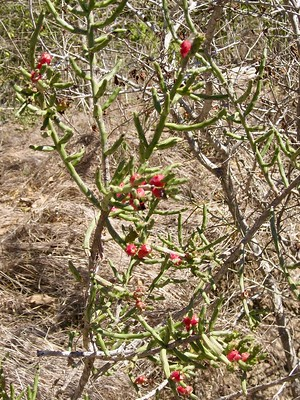
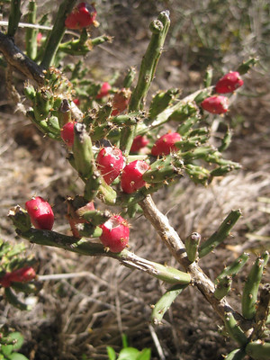
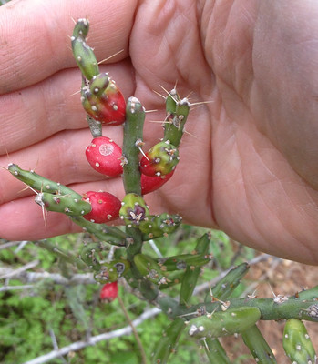
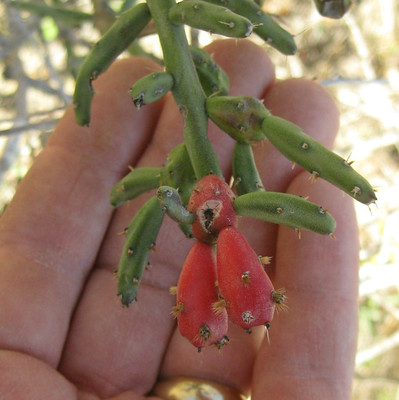

Cactus - Cholla Pencil
Scientific Name(s): Cylindropuntia leptocaulis
Abundance: common
What: fruit
How: raw, jam, jelly, wine
Where: arid, sunny, shade, borders, fields
When: winter
Nutritional Value: calories
Dangers: tiny spines (glochids) can cause a lot of pain and discomfort if not removed from fruit before eating.
Cholla cactus aka Christmas cactus aka pencil cactus with fruit in January.
New, green stems of the cactus grow off its fruit.
Close-up of cholla cactus fruit.
Cholla Pencil cactus first appear in the drier areas of east Texas and becomes more and more common as you head west. This cactus is easily recognized by it's long, thin, multi-branched stems intersected by small, red, thorny, tasty fruit. Other names for it include "Tasajillo" and "Christmas Cactus". The red fruit starts appearing in late summer and hangs around through mid-winter. When intertwined with a tree or other support, they can grow almost six feet tall. Their small (1/2") yellow to slightly greenish flowers open in the afternoon and then close by sunset. Look for it in sunny fields, especially along fence lines and other borders. Unlike the fruit of most plants, Cylindropuntia leptocaulis fruits sprout multiple, new stems in late winter/early spring which make collecting these small treats somewhat difficult and time-consuming. Add to that their many thorns and tiny glochids and you have food that really takes some effort to harvest.
This is another plant that requires a thick, leather glove and a sharp knife to harvest. These fruit are too small to use the burning technique to remove their spines/glochids like I do with Opuntia cactus tunas. Carefully trim away the section of skin containing the thorns, then they're ready to eat. I suppose one could juice them or use them to make jelly, jam, or wine but honestly, even though they taste great I'm just to lazy to put in the effort required to harvest more than a quick snack's worth.